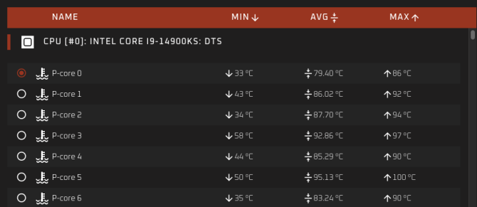

Абсурдно много для CPU. Новый i9-14900KS во время тестов потреблял до 410 Вт
Новый процессор Intel Core i9-14900KS появился в списке онлайн-тестов, Как и говорили слухи, компания Intel увеличит тактовую частоту своего флагманского процессора на 200 МГц, до 6,2 ГГц, что уже было сделано для остальной части линейки. Это очень внушительные цифры, но небольшая проблема заключается в том, что во время тестов нового i9-14900KS, процессор потреблял 410 Вт на пике, а среднее потребление составляло 300 Вт под нагрузкой. Вполне возможно, этот CPU станет самым горячим в истории процессоров для персональных компьютеров.
Intel пока не анонсировала 14900KS, но он скоро поступит в продажу, поскольку процессор появился в базе данных бенчмарка OCCT. В списке указано только название чипа, а также его энергопотребление и температура ядра, но не нужно быть гением, чтобы понять, что это процессор с частотой 6,2 ГГц линейки i9 модели KS. В прошлом поколении мы наблюдали ту же картину: после выхода 13900K в бенчмарке появился чип с частотой на 200 МГц выше, с 5,8 ГГц до 6 ГГц, и это был процессор 13900KS. Теперь мы видим похожий по характеристикам на 14900K чип с частотой 6,2 ГГц. Новый процессор имеет те же 24 ядра и 32 потока, что и актуальный флагман, а главное отличие — буст частоты на те самые 200 МГц.

Но не 6,2 ГГц частоты главная цифра проведенных тестов. Намного удивительнее температурный режим работы новинки и объем потребляемой мощности и, соответственно, выделяемого процессором объема тепла при работе под высокой нагрузкой. В тестах новый i9 оказался крайне горячим процессором медианной температурой в районе 85-87 градусов Цельсия (от 79 для CPU-0 и до 95 на других ядрах). Пиковая температура на ядро достигала предельных паспортных 100 градусов Цельсия. При этом при максимальной нагрузке на все 24 ядра энергопотребление процессора взлетало до абсурдных 410 Вт, а медианное потребление находилось в районе 330 Вт.
Конечно же, i9-14900KS найдет своего покупателя среди фанатов оверклокинга и прочих энтузиастов. Но пока грядущая новинка Intel выглядит как кандидат на обязательное скальпирование, впервые, со времен 7-8 поколения iCore. И это если не брать в расчет то, что для раскрытия потенциала i9-14900KS потребуется весьма требовательная и специфическая конфигурация платформы, которая во всех смыслах будет «огненной»: по температуре, по совокупной мощности и, конечно же, по цене. Текущий флагман Intel i9-14900K в рознице сейчас продается за 73 тысячи рублей, а стоимость новинки с индексом KS может составить 80 тысяч рублей и более.